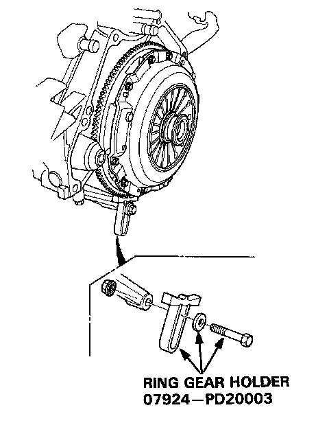
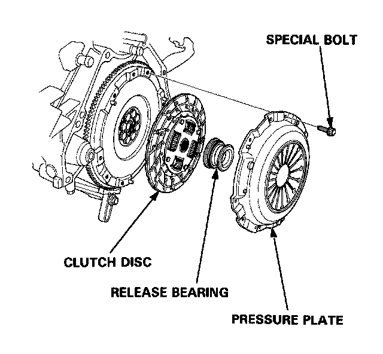
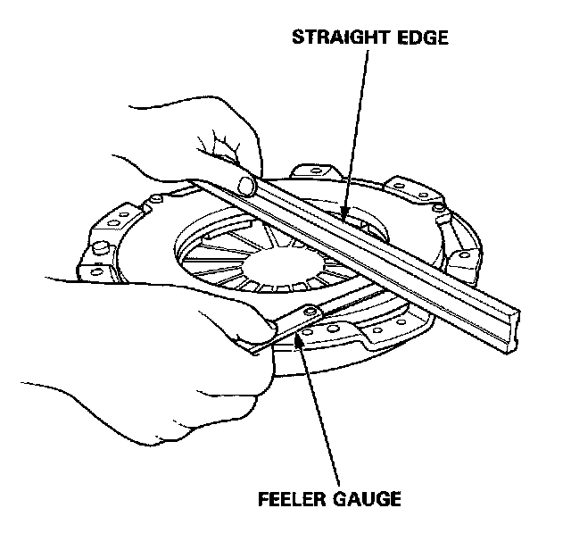
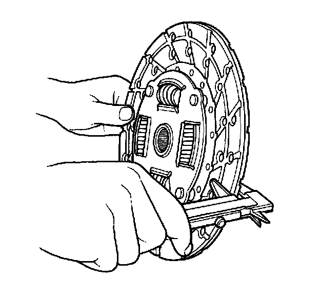
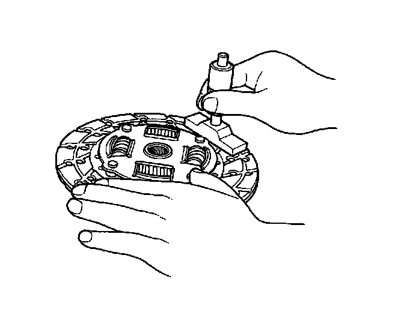
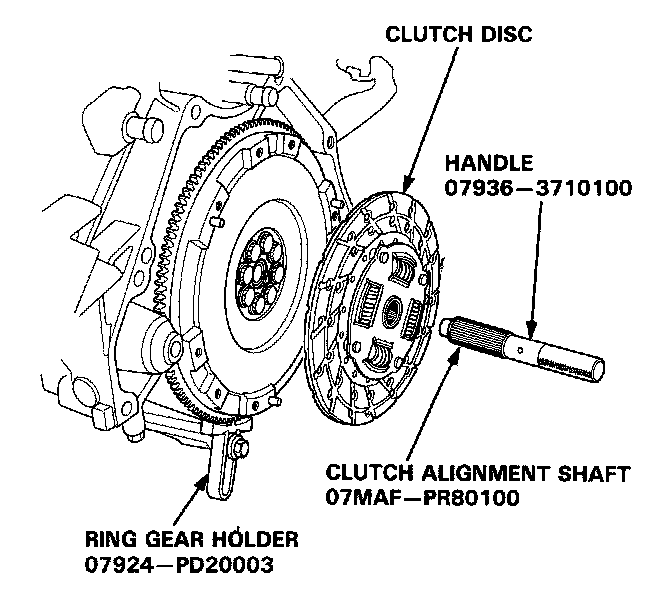
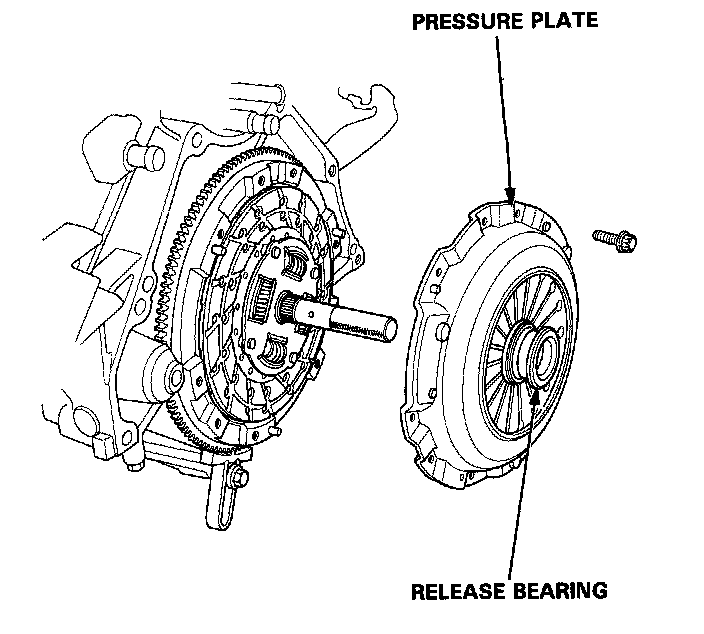
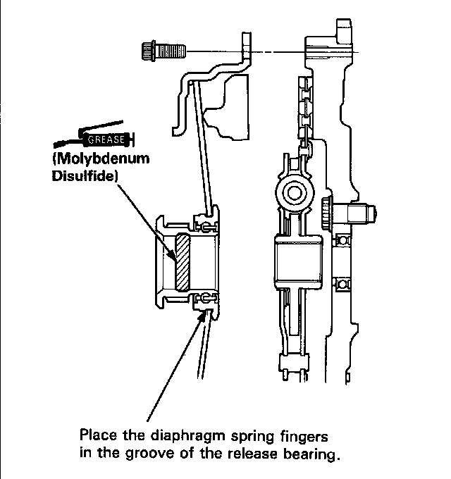
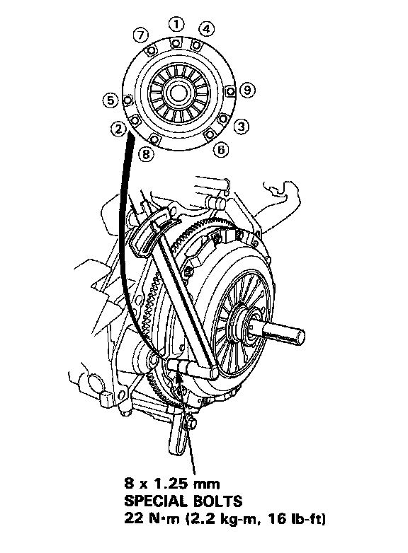

Clutch Replacement
REMOVAL

1. Install the Ring Gear Holder as shown.
2. To prevent warping, unscrew the pressure plate mounting bolts two turns at a time in a crisscross pattern, then remove the pressure plate and the clutch disc.

3. Remove the release bearing from the pressure plate.
PRESSURE PLATE INSPECTION
1. Inspect the pressure plate surface for wear, cracks, or burning.
2. inspect the fingers of the diaphragm spring for wear at the release bearing contact area.

3. Inspect for warpage using a straight edge and feeler gauge. Measure across the pressure plate.
Warpage Limits:
Standard (New): 0.03 mm (0.0012 in)
Service Limit: 0.15 mm (0.0059 in)
CLUTCH DISC INSPECTION
1. Inspect the lining of the clutch disc for signs of slip ping or oil. Replace it if it is burned black or oil soaked.

2. Measure the clutch disc thickness.
Clutch Disc Thickness:
Standard (New): 9.6-10.3 mm (0.38-0.41 in)
Service Limit: 6.8 mm (0.26 in)

3. Measure the depth from the lining surface to the rivets, on both sides.
Rivet Depth:
Standard (New): 1.5 mm (0.059 in) mm.
Service Limit: 0.5 mm (0.019 in)
INSTALLATION
1. Install the ring gear holder.
2. Install the clutch disc.

3. Install the clutch alignment shaft.
4. Install the release bearing on the pressure plate.


5. Install the pressure plate.
NOTE: After installed, make sure the release bearing does not come off.

6. Torque the bolts in a crisscross pattern as shown. Tighten them two turns at a time to prevent warping the diaphragm spring.
NOTE: After installed, make sure the release bearing does not come off.
7. Remove the alignment tool and ring gear holder.